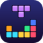
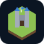
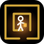
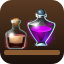
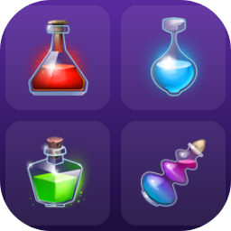
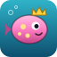

Trial and Error
Small games you can play right in your browser.Små spel som du kan spela direkt i webbläsaren.
-

Block DropBlockfall
Stack falling blocks and clear full rows. Move, rotate and drop with the buttons.Stapla fallande block och rensa hela rader. Flytta, vrid och släpp med knapparna.
-

Hex HoldHexfästet
Build a town on a hex island, gather resources, train heroes, raid dungeons and hold out against growing waves of monsters.Bygg en stad på en hexagonö, samla resurser, träna hjältar, plundra grottor och stå emot allt starkare vågor av monster.
-

Lantern MazeLyktlabyrinten
Find your way through dark, ever-growing mazes by lantern light. Every dead end hides a locked chest and a sum to solve.Hitta vägen genom mörka, växande labyrinter i lyktans sken. Varje återvändsgränd döljer en låst kista och ett tal att lösa.
-

Potion MarketTrolldrycksmarknaden
Brew potions and sell them on a market shared by every player, where prices rise and fall with what everyone sells.Brygg trolldrycker och sälj dem på en marknad som alla spelare delar, där priserna stiger och sjunker med det alla säljer.
-

Potion MatchTrolldrycker
Swap potions to match three or more and make bombs, crosses and rainbows. Matches are free, misses cost a move: play well and it never ends.Byt plats på drycker för att matcha tre eller fler och skapa bomber, kors och regnbågar. Matchningar är gratis, missar kostar ett drag: spela väl så tar det aldrig slut.
-

Wild PondVilda dammen
Breed little pond creatures to discover rare looks, and trade them with other players through a shared pond.Para små dammvarelser för att hitta sällsynta utseenden, och byt dem med andra spelare genom en gemensam damm.